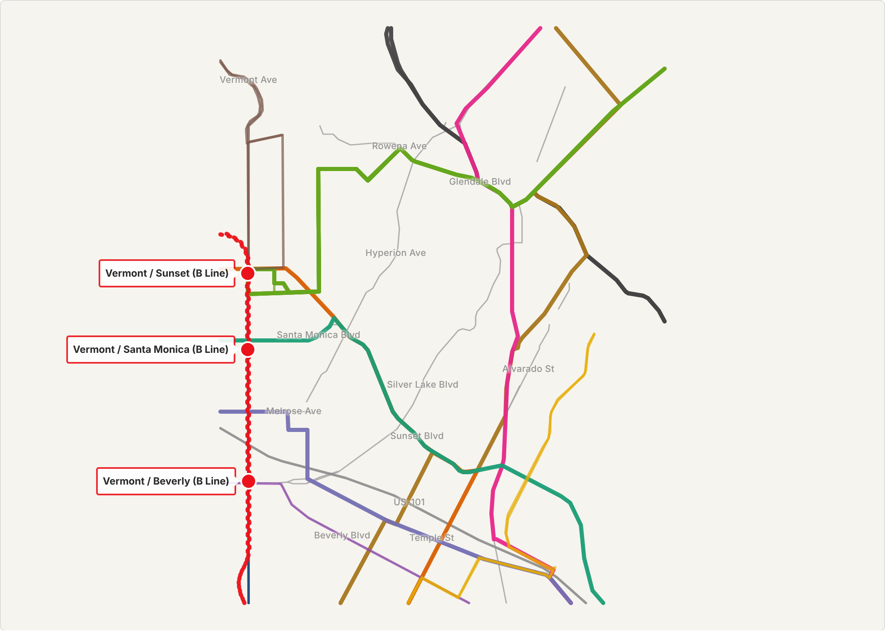

SLNC data
Data supporting Silver Lake Neighborhood Council.
311 requests, last 30 days
Loading…
Transit
Bus routes and the B Line through and near the NC, over a light layer of main streets.

311: MyLA311 Cases 2026, City of Los Angeles, filtered to the Silver Lake NC. Map © OpenStreetMap contributors. Transit: LA Metro and LADOT schedule data.